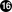

Ein sehr wichtiger und dringender Schritt, den man unternehmen muss, sobald eine Sicherheitslücke entdeckt wurde, ist die Gemeinschaft der Anwender des Ports über die Gefahr zu informieren. Diese Benachrichtigung hat zwei Gründe. Erstens wird es sinnvoll sein, wenn die Gefahr wirklich so groß ist, sofort Abhilfe zu schaffen, indem man z.B. den betreffenden Netzwerkdienst beendet oder den Port komplett deinstalliert, bis die Lücke geschlossen wurde. Und Zweitens pflegen viele Nutzer installierte Pakete nur gelegentlich zu aktualisieren. Sie werden aus der Mitteilung erfahren, dass Sie das Paket, sobald eine Korrektur verfügbar ist, sofort aktualisieren müssen.
Angesichts der riesigen Zahl an Ports kann nicht für jeden Vorfall ein Sicherheitshinweis erstellt werden, ohne durch die Flut an Nachrichten die Aufmerksamkeit der Empfänger zu verlieren, im Laufe der Zeit kommt es so zu ernsten Problemen. Deshalb werden Sicherheitslücken von Ports in der FreeBSD VuXML-Datenbank aufgezeichnet. Das Team der Sicherheitsverantwortlichen beobachtet diese wegen Angelegenheiten, die Ihr Eingreifen erfordern.
Wenn Sie Committerrechte haben, können Sie die VuXML-Datenbank selbst aktualisieren. Auf diese Weise helfen Sie den Sicherheitsverantwortlichen und liefern die kritischen Informationen frühzeitig an die Community. Aber auch wenn Sie kein Committer sind und glauben, Sie haben eine außergewöhnlich schwerwiegende Lücke gefunden – egal welche – zögern Sie bitte nicht die Sicherheitsverantwortlichen zu kontaktieren, wie es in den FreeBSD Sicherheitsinformationen beschrieben wird.
Wie vielleicht aus dem Titel hervorgeht, handelt es sich
bei der VuXMl-Datenbank um ein
XML-Dokument. Die Quelldatei vuln.xml
können Sie im Port security/vuxml finden. Deshalb
wird der komplette Pfadname
PORTSDIR/security/vuxml/vuln.xml
lauten. Jedes Mal, wenn Sie eine Sicherheitslücke in
einem Port entdecken, fügen Sie bitte einen Eintrag
dafür in diese Datei ein. Solange Sie nicht mit VuXML
vertraut sind, ist es das Beste, was Sie machen können,
einen vorhandenen Eintrag, der zu Ihrem Fall passt, zu
kopieren und als Vorlage zu verwenden.
Das komplette XML ist komplex und würde den Rahmen dieses Buches sprengen. Allerdings benötigen Sie für einen grundlegenden Einblick in die Struktur eines VuXML-Eintrags nur eine Vorstellung der Tags. XML-Tags bestehen aus Namen, die in spitzen Klammern eingeschlossen sind. Zu jedem öffnenden <Tag> muss ein passendes </Tag> existieren. Tags können geschachtelt werden. Wenn sie geschachtelt werden müssen die inneren Tags vor den Äußeren geschlossen werden. Es gibt eine Hierarchie von Tags – das heißt komplexere Regeln zur Schachtelung. Klingt so ähnlich wie HTML, oder? Der größte Unterschied ist: XML ist erweiterbar (eXtensible) – das heißt es basiert darauf maßgeschneiderte Tags zu definieren. Aufgrund seiner wesentlichen Struktur bringt XML ansonsten formlose Daten in eine bestimmte Form. VuXML ist speziell darauf zugeschnitten Beschreibungen von Sicherheitslücken zu verwalten.
Lassen Sie uns nun einen realistischen VuXML-Eintrag betrachten:
<vuln vid="f4bc80f4-da62-11d8-90ea-0004ac98a7b9"><topic>Several vulnerabilities found in Foo</topic>
<affects> <package> <name>foo</name>
<name>foo-devel</name> <name>ja-foo</name> <range><ge>1.6</ge><lt>1.9</lt></range>
<range><ge>2.*</ge><lt>2.4_1</lt></range> <range><eq>3.0b1</eq></range> </package> <package> <name>openfoo</name>
<range><lt>1.10_7</lt></range>
<range><ge>1.2,1</ge><lt>1.3_1,1</lt></range> </package> </affects> <description> <body xmlns="http://www.w3.org/1999/xhtml"> <p>J. Random Hacker reports:</p>
<blockquote cite="http://j.r.hacker.com/advisories/1"> <p>Several issues in the Foo software may be exploited via carefully crafted QUUX requests. These requests will permit the injection of Bar code, mumble theft, and the readability of the Foo administrator account.</p> </blockquote> </body> </description> <references>
<freebsdsa>SA-10:75.foo</freebsdsa>
<freebsdpr>ports/987654</freebsdpr>
<cvename>CAN-2010-0201</cvename>
<cvename>CAN-2010-0466</cvename> <bid>96298</bid>
<certsa>CA-2010-99</certsa>
<certvu>740169</certvu>
<uscertsa>SA10-99A</uscertsa>
<uscertta>SA10-99A</uscertta>  <mlist msgid="201075606@hacker.com">http://marc.theaimsgroup.com/?l=bugtraq&m=203886607825605</mlist>
<url>http://j.r.hacker.com/advisories/1</url>
</references> <dates> <discovery>2010-05-25</discovery>
<entry>2010-07-13</entry>
<modified>2010-09-17</modified>
</dates> </vuln>
Die Namen der Tags sollten selbsterklärend sein – also werfen wir einen genaueren Blick auf die Felder, die Sie selbst ausfüllen müssen:
| Dies ist die höchste Tag-Ebene eines
VuXML-Eintrags. Es ist ein vorgeschriebenes Attribut
|
| Dies ist eine einzeilige Beschreibung des gefundenen Fehlers. |
| Hier werden die Namen betroffener Pakete aufgeführt. Es können mehrere Namen angegeben werden, da mehrere Pakete von einem einzigen Master-Port oder Software-Produkt abhängen können. Das schließt Stable– und Developement-Zweige, lokalisierte Versionen und Slave-Ports ein, die verschiedene Auswahlmöglichkeiten wichtiger Kompilierungszeit-Optionen bieten. Wichtig:Es liegt in Ihrer Verantwortung all diese
betroffenen Pakete zu finden, wenn Sie den
VuXML-Eintrag schreiben.Behalten Sie im
Hinterkopf, dass
|
| Betroffene Versionen der Pakete werden hier als
ein Bereich oder mehrere durch eine Kombination aus
In einer Bereichsangabe steht
Das obige Beispiel legt fest, dass Versionen von
|
| Mehrere zusammenhängende Gruppen von
Paketen (im wesentlichen Ports) können im
Abschnitt |
| Die Versionsbereiche sollten, wenn möglich,
sowohl |
| Das ist die Zusammenfassung des Problems. In
diesem Feld wird XHTML verwendet. Zumindest
umschließende |
| Dieser Abschnitt enthält Verweise auf relevante Dokumente. Es wird empfohlen so viele Referenzen wie nötig aufzuführen. |
| Das ist ein FreeBSD Sicherheitshinweis. |
| Das ist ein FreeBSD Problembericht. |
| Das ist eine Mitre CVE Kennung. |
| Das ist eine SecurityFocus Fehler-Kennung. |
| Das ist ein Sicherheitshinweis von US-CERT. |
| Das ist eine Mitteilung über eine Schwachstelle von US-CERT. |
| Das ist ein Cyber-Sicherheitsalarm von US-CERT. |
Das ist ein technischer Cyber-Sicherheitsalarm von US-CERT. | |
| Das ist eine URL zu einem archivierten Posting
auf einer Mailingliste. Das Attribut
|
| Das ist eine gewöhnliche URL. Sie sollte nur verwendet werden, wenn keine der anderen Referenzkategorien verfügbar ist. |
| Das ist das Datum, an dem die
Sicherheitslücke bekannt wurde
( |
| Das ist das Datum, an dem der Eintrag
hinzugefügt wurde
( |
| Das ist das Datum, an dem zuletzt irgendeine
Information des Eintrags verändert wurde
( |
Nehmen wir an, Sie haben gerade einen Eintrag
für eine Sicherheitslücke in dem Paket
clamav geschrieben oder
ausgefüllt, die in der Version
0.65_7 korrigiert wurde.
Als Voraussetzung müssen Sie die aktuellen Versionen der Ports ports-mgmt/portaudit, ports-mgmt/portaudit-db sowie security/vuxml installieren.
Anmerkung:
Um packaudit auszuführen,
müssen Sie die Berechtigung haben
DATABASEDIR zu
schreiben – üblicherweise ist das
/var/db/portaudit.
Durch Setzen der Umgebungsvariable
DATABASEDIR können
Sie hier auch ein anderes Verzeichnis angeben.
Arbeiten Sie nicht aus dem Verzeichnis
${PORTSDIR}/security/vuxml heraus,
müssen Sie zusätzlich die Umgebungsvariable
VUXMLDIR setzen, um
anzugeben, in welchem Verzeichnis sich die Datei
vuln.xml befindet.
Zuerst überprüfen Sie bitte, ob bereits
ein Eintrag für diese Schwachstelle existiert. Wenn
es einen solchen Eintrag gibt, sollte er auf die vorige
Version 0.65_6 zutreffen:
%packaudit%portaudit clamav-0.65_6
Wenn keine vorhandenen Einträge gefunden werden
haben Sie grünes Licht, einen neuen Eintrag für
diese Sicherheitslücke anzulegen. Sie können nun
eine neue UUID erzeugen (wir nehmen an, diese lautet
74a9541d-5d6c-11d8-80e3-0020ed76ef5a)
und einen neuen Eintrag in der VuXML-Datenbank anlegen.
Bitte überprüfen Sie danach die Syntax mit
folgendem Befehl:
%cd ${PORTSDIR}/security/vuxml && make validate
Anmerkung:
Sie werden zumindest eines der folgenden Pakete benötigen: textproc/libxml2, textproc/jade.
Jetzt bauen Sie bitte die
portaudit-Datenbank aus der VuXML-Datei
neu:
%packaudit
Um sicherzustellen, dass der Abschnitt
<affected> Ihres Eintrags die
richtigen Pakete betrifft, verwenden Sie bitte den
folgenden Befehl:
%portaudit -f /usr/ports/INDEX -r 74a9541d-5d6c-11d8-80e3-0020ed76ef5a
Anmerkung:
Bitte lesen Sie in portaudit(1) nach, um ein besseres Verständnis der Befehlssyntax zu entwickeln.
Bitte stellen Sie sicher, dass Ihr Eintrag keine falschen Treffer in der Ausgabe erzeugt.
Jetzt überprüfen Sie bitte, dass Ihr Eintrag die richtigen Versionen des Pakets angibt:
%portaudit clamav-0.65_6 clamav-0.65_7Affected package: clamav-0.65_6 (matched by clamav<0.65_7) Type of problem: clamav remote denial-of-service. Reference: <http://www.freebsd.org/ports/portaudit/74a9541d-5d6c-11d8-80e3-0020ed76ef5a.html> 1 problem(s) found.
Offensichtlich sollte die erste Version ausgegeben werden – die zweite jedoch nicht.
Abschließend überprüfen Sie bitte, ob die Webseite, die aus der VuXML-Datenbank erzeugt wird, wie erwartet aussieht:
%mkdir -p ~/public_html/portaudit%packaudit%lynx ~/public_html/portaudit/74a9541d-5d6c-11d8-80e3-0020ed76ef5a.html